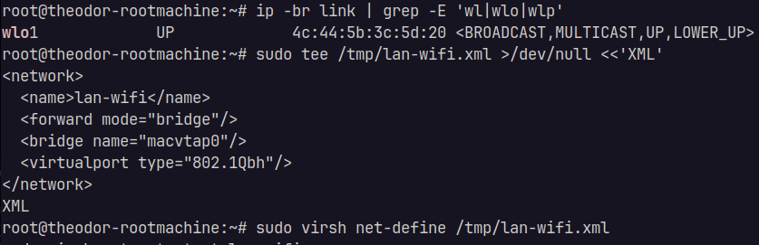
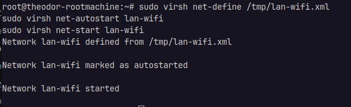
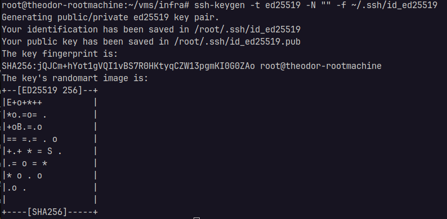
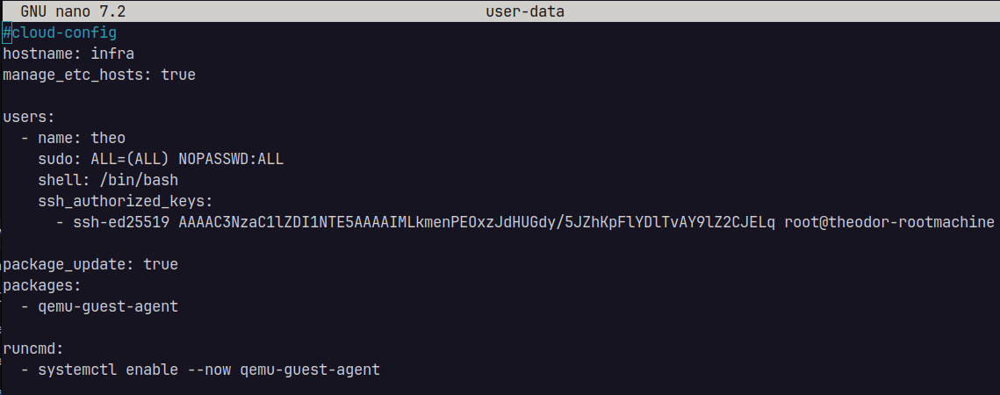
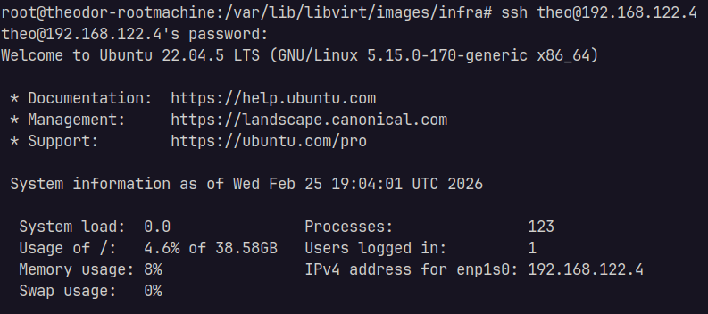

Creare LAN: lan-wifi: un vor fi prezente toate VM-urile
Acest lan-wifi a fost creat pentru a putea face bridge intre masinile conectate pe o interfata wifi (server-ul bare metal este laptop conectat in retea prin WiFi, iar aceasta este singura metoda.


Creare VM de monitorizare si configurarea infrastructura cu cloud-init + cloud image:
Instalare utilitare:
sudo apt install -y cloud-image-utils libguestfs-tools wget
Unde:
- cloud-image: Este o imagine Ubuntu deja pregătită pentru VM: fără installer,minimală,pregătită să primească config la boot
- cloud-init: la PRIMUL boot al VM-ului:creează user, setează parola sau cheia SSH, setează hostname,instalează pachete,rulează comenzi
Aceasta imagine(ISO) este oficiala UBUNTU.
Download Ubuntu 22.04 ISO in folder-ul de infrastructura pentru a folosi la creearea VM-ului:
mkdir -p ~/vms/infra
cd ~/vms/infra
wget -O ubuntu.qcow2 https://cloud-images.ubuntu.com/jammy/current/jammy-server-cloudimg-amd64.img
Se va descarca imaginea custom: ubuntu.qcow2 -> imagine optimizata pentru a rula intr-un mediu virtualizat, oficiala Ubuntu, pre-configurata
Vom redenumi imaginea pentru a o putea refolosi + alocare de 50GB:
cp ubuntu.qcow2 infra.qcow2
qemu-img resize infra.qcow2 50G
Apoi vom configura VM-ul:
-
Generare cheie SSH pentru noul VM:

-
Config
user-datasimeta-data:
Incarcare datele de configurare in imaginea ISO cloud-init infra-seed.iso: cloud-localds infra-seed.iso user-data meta-data
Aceasta imagine va face configurarea vazuta mai sus.
In crearea VM-ului vom incarca ambele ISO-uri:
- primul: imaginea cu OS qcow2
- al doilea: configul OS-ului mentionat: infra-seed.iso
Acestea sunt citite ca discuri -> asa functioneza citirea KVM-ului (hypervisor-ul de virtualizare a linux-ului)
Creare VM: atasarea IOS-uri, configurare VM si introducerea in retea
In cazul virtualizatii cu KVM, avem prezente 2 retele:
1. Retea "Routerului" unde toate device-urile/VM-urile sunt conectate: 192.168.1.0/24
2. O retea Virtuala NAT KVM
Pentru moment vom crea o singura interfata(wlo1), conectata la reteaua router-ului (bridge realizat prin "reteaua" LAN wifi-lan creata anterior)
Comanda creare VM prin KVM:
sudo virt-install \
--name infra \
--memory 3072 \
--vcpus 2 \
--cpu host \
--disk path=/var/lib/libvirt/images/infra/infra.qcow2,format=qcow2,bus=virtio \
--disk path=/var/lib/libvirt/images/infra/infra-seed.iso,device=cdrom \
--os-variant ubuntu22.04 \
--network network=default,model=virtio \
--graphics none \
--import \
--noautoconsole
And by tryng SSH:

Arhitectura actuala:
Laptop admin (client SSH) - 192.168.1.146/24
|
| LAN/Wi-Fi 192.168.1.0/24 (gateway ex. 192.168.1.1)
|
Host KVM (Ubuntu Server) - 192.168.1.50/24
|
| libvirt NAT network: 192.168.122.0/24 (Gateway pe if `virbr0`: 192.168.122.1)
|
VM infra - 192.168.122.4/24 (NIC: enp1s0, DHCP)